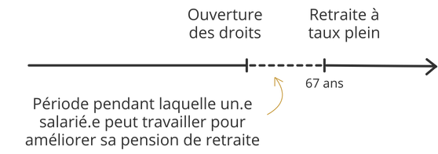

Le système de retraite en France The pension system in France
Le système de retraite est obligatoire et fonctionne par répartition. Chaque employé ainsi que son employeur·euse cotisent pour la retraite de l’employé en fonction de son salaire, et les cotisations versées aujourd’hui financent les pensions des retraités actuels. The pension system in France is mandatory and operates on a pay-as-you-go basis. Both employees and employers contribute according to the employee’s salary, and current contributions finance the pensions of today’s retirees.
Le montant de la pension perçue dépend des professions exercées, de l’âge légal de départ à la retraite et de la durée de la carrière. The level of pension benefits depends on the occupations held, the legal retirement age, and the length of an individual’s working career.

L’âge légal de départ à la retraite correspond à l’âge à partir duquel un salarié peut percevoir une pension. L’âge de la retraite à taux plein, fixé à 67 ans, permet à chaque salarié arrêtant son activité professionnelle de bénéficier d’une pension à taux plein, sans condition sur la durée de travail effectuée. Les salariés peuvent atteindre un taux plein avant 67 ans, s’ils ont atteint la durée travaillée nécessaire. The legal retirement age refers to the minimum age at which an employee can start receiving a pension. The full pension age, set at 67, allows individuals to receive full pension benefits regardless of contribution duration.
Cependant, certains salariés peuvent prendre leur retraite avant l’âge légal de départ à la retraite s’ils remplissent certains critères :
- Invalidité ;
- Carrière longue (agents ayant commencé jeune leur activité professionnelle) ;
- En qualité de parent de trois enfants ou d’un enfant atteint d’une infirmité ;
- Au titre d’une infirmité ou d’une maladie incurable ;
- Au titre d’une incapacité permanente d’au moins 50%.
Décalage de l’âge légal de départ à la retraite depuis 2023 Increase in the legal retirement age since 2023
La réforme des retraites appliquée à partir du 1er septembre 2023 comprend de nombreuses mesures. Sa suspension jusqu’au 31 août 2026 a été votée par l’Assemblée nationale le 16 décembre 2025. The pension reform implemented from September 1st, 2023 includes a range of measures. Its suspension until August 31st, 2026 was voted by the National Assembly on December 16th, 2025.
La mesure principale de cette réforme concerne l’âge légal de départ à la retraite, qui recule progressivement de 62 à 64 ans d’ici 2030. L’âge légal de départ varie donc selon la date de naissance de l’employé : The main provision of the reform concerns the legal retirement age, which is gradually increasing from 62 to 64 by 2030. As a result, the applicable retirement age depends on the employee’s year of birth:
| Date de naissance | Âge légal de départ à la retraite |
| Jusqu'au 31 aoput 1961 | 62 ans |
| Du 1er septembre au 31 décembre 1961 | 62 ans et 3 mois |
| 1962 | 62 ans et 6 mois |
| 1963 | 62 ans et 9 mois |
| 1964 | 63 ans |
| 1965 | 63 ans et 3 mois |
| 1966 | 62 ans et 6 mois |
| 1967 | 62 ans et 9 mois |
| A partir de 1968 | 64 ans |
Les ruptures conventionnelles Mutual agreement terminations
La rupture conventionnelle individuelle est un dispositif entré en vigueur en France le 1er aout 2028, qui permet à l’employeur et au salarié de rompre d’un commun accord un CDI. Après une rupture conventionnelle, le salarié peut percevoir des indemnités de France Travail (anciennement Pôle emploi). [ … ]
Une indemnité de rupture conventionnelle est versée au salarié par l’employeur au moment de la rupture du contrat. [ … ]
| Avant l'âge légal | Après l'âge légal | |
| Avant la réforme | Forfait social de 20% applicable sur la fraction de l’indemnité exonérée de cotisations de sécurité sociale | Aucune exonération : assimilation des indemnités de rupture à du salaire |
| Après la réforme | Contribution patronale spécifique de 30% désormais à la charge de l’employeur applicable sur la fraction de l’indemnité exonérée de cotisations de sécurité sociale | Contribution patronale spécifique de 30% désormais à la charge de l’employeur applicable sur la fraction de l’indemnité exonérée de cotisations de sécurité sociale |
Depuis le 1er septembre 2023, les indemnités de rupture conventionnelle sont soumises aux cotisations sociales pour une partie, l’employeur est soumis à une cotisation patronale spécifique sur la part de l’indemnité de rupture conventionnelle non soumise aux cotisations sociales. [ … ]
Après la réforme, le coût des ruptures conventionnelles concernant les salariés de moins de 62 ans augmente pour l’employeur à partir du 1er septembre 2023. [ … ]